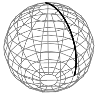

The GIL restricts bytecode execution to a single core, making pure Python threads an ineffective tool for distributing CPU bound work across multiple cores.
How do we get around this?
- use a parallel execution technique other than shared memory threading
- multiprocessing
- subprocessing
- move parts of the application out into binary extension modules
I will be re-using the Great Circle problem to illustrate several the different methods to speed up code.
Basically, we are trying to calculate the shortest distance between two points on a sphere (i.e. the earth).
greatCircle <- function(lon1,lat1,lon2,lat2){
radius <- 3956 #miles
x <- pi/180.0
a <- (90.0-lat1)*(x)
b <- (90.0-lat2)*(x)
theta <- (lon2-lon1)*(x)
c <- acos((cos(a)*cos(b)) + (sin(a)*sin(b)*cos(theta)))
return(radius*c)
}
import math
def great_circle(lon1,lat1,lon2,lat2):
radius = 3956 #miles
x = math.pi/180.0
a = (90.0-lat1)*(x)
b = (90.0-lat2)*(x)
theta = (lon2-lon1)*(x)
c = math.acos((math.cos(a)*math.cos(b)) +
(math.sin(a)*math.sin(b)*math.cos(theta)))
return radius*c
from GreatCircle import great_circle
print(great_circle(-13,73,-105,38))
And what about a million distances?
import numpy as np
n = 1000000
m = np.random.randint(-360,360,n*4).reshape(n,4)
Then to loop through the matirx...
for i in range(mat.shape[0]):
x = great_circle(mat[i,:])
Can you think of any tools that you might already have?
It is generally inefficient to loop. Use NumPy
def great_circle_numpy(mat):
radius = 3956
x = math.pi/180.0
lon1 = mat[:,0]
lat1 = mat[:,1]
lon2 = mat[:,2]
lat2 = mat[:,3]
a = (90.0-lat1)*(x)
b = (90.0-lat2)*(x)
theta = (lon2-lon1)*(x)
c = np.cosh((np.cos(a)*np.cos(b)) +
(np.sin(a)*np.sin(b)*np.cos(theta)))
return radius*c
from GreatCircle import great_circle_numpy
timeStart = time.time()
c = great_circle_numpy(mat)
runTime = time.time() - timeStart
print time.strftime('%H:%M:%S', time.gmtime(runTime))
In R there are the apply functions, which improve speed where looping is concerned.
Does you problem consist of only matrix operations?
import subprocess
# run R
timeStart = time.time()
cmd = 'Rscript RunGreatCircle.R'
proc = subprocess.Popen(cmd,shell=True,stderr=subprocess.PIPE,
stdout=subprocess.PIPE)
stdOut, stdErr = proc.communicate()
runTime = time.time() - timeStart
print("R time", time.strftime('%H:%M:%S', time.gmtime(runTime)))
# run python
timeStart = time.time()
cmd = 'python RunGreatCircle.py'
proc = subprocess.Popen(cmd,shell=True,stderr=subprocess.PIPE,
stdout=subprocess.PIPE)
stdOut, stdErr = proc.communicate()
runTime = time.time() - timeStart
print("Python time", time.strftime('%H:%M:%S', time.gmtime(runTime)))
system("Rscript RunGreatCircle.R")
system("python RunGreatCircle.py")
There are more controls from within the system command
?system
- Save the whole matrix as a file e.g. csv
- Break the file into wedges (1 for each core)
- Change the RunScript to accept options for begin, end and wedge (-b, -e, -w)
- Ensure the RunScript produces an outfile with an appropriate wedge id
- Run it
- Once finished reassemble all wedges into the full outfile.